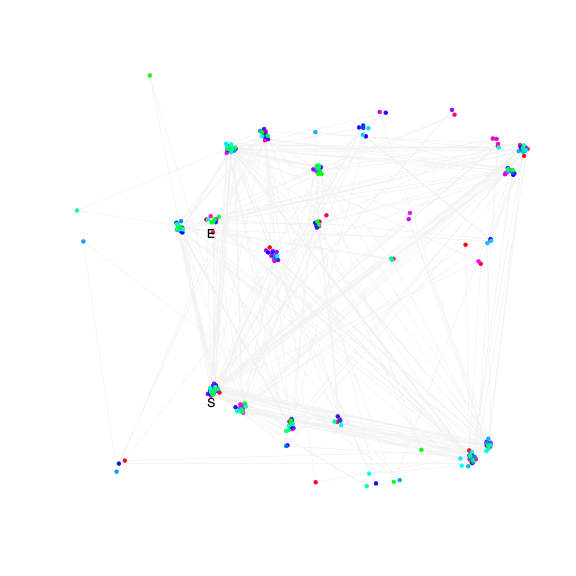

| chain # | burnin | subsample | Iterations (remaining) | command line | subdirectory | directory |
|---|---|---|---|---|---|---|
| 1 | 10000 | 1 | 90000 | /usr/local/bali-phy-3.0-beta2/bin/bali-phy E6_AA_red3_Alpha_all4Manatees.fas -s 26534 -n E6_red3_Alpha_all4Manatees_c1 | E6_red3_Alpha_all4Manatees_c1-1 | /home/willemse/data/trees/BaliPhy/E6 |
| P(data|M) = -3604.834 +- 0.129 | Complete sample: 243 topologies | 95% Bayesian credible interval: 32 topologies |
Phylogeny Distribution

| Partition support: Summary |
| Partition support graph: SVG |
{kind=link}
| 50% consensus | Newick (+PP) | SVG | |||||
| 66% consensus | Newick (+PP) | SVG | |||||
| 80% consensus | Newick (+PP) | SVG | |||||
| 90% consensus | Newick (+PP) | SVG | |||||
| 95% consensus | Newick (+PP) | SVG | |||||
| 99% consensus | Newick (+PP) | SVG | |||||
| 100% consensus | Newick (+PP) | SVG | |||||
| MAP | Newick (+PP) | SVG | |||||
| greedy | Newick (+PP) | SVG |
{kind=link}
{kind=link}
{kind=link}
{kind=link}
{kind=link}
{kind=link}
{kind=link}
{kind=link}
Alignment Distribution
Partition 1
| Diff | Min. %identity | # Sites | Constant | Informative | ||||
|---|---|---|---|---|---|---|---|---|
| Initial | FASTA | HTML | Diff | 1.4% | 186 | 1 (0.538%) | 154 (82.8%) | |
| Best (WPD) | FASTA | HTML | AU | 14.1% | 326 | 14 (4.29%) | 96 (29.4%) |
Mixing
{kind=link}
{kind=link}
| burnin (scalar) | ESS (scalar) | ESS (partition) | ASDSF | MSDSF | PSRF-CI80% | PSRF-RCF |
|---|---|---|---|---|---|---|
| 937 | 148 | 3148.357 | NA | NA | NA | NA |
Projection of RF distances for 1 chain3D | Variation of split PPs across chainsNot generated: multiple chains needed. |
Scalar variables
| Statistic | Median | 95% BCI | ACT | ESS | burnin | PSRF-CI80% | PSRF-RCF |
|---|---|---|---|---|---|---|---|
| prior | -163 | (-189.9, -138.5) | 84.75 | 1061 | 658 | NA | NA |
| prior_A1 | -155 | (-179.1, -133.4) | 60.49 | 1487 | 659 | NA | NA |
| likelihood | -3593 | (-3606, -3579) | 28.07 | 3206 | 194 | NA | NA |
| logp | -3756 | (-3781, -3734) | 119.4 | 753 | 408 | NA | NA |
| Heat.beta | 1 | ||||||
| Scale1 | 6.012 | (3.316, 9.775) | 1.013 | 88887 | 70 | NA | NA |
| S1.F.pi.A | 0.05506 | (0.04196, 0.06971) | 7.603 | 11838 | 75 | NA | NA |
| S1.F.pi.R | 0.08903 | (0.0709, 0.1079) | 9.647 | 9329 | 233 | NA | NA |
| S1.F.pi.N | 0.03131 | (0.02153, 0.04167) | 7.762 | 11595 | 71 | NA | NA |
| S1.F.pi.D | 0.05564 | (0.0411, 0.07103) | 7.493 | 12011 | 171 | NA | NA |
| S1.F.pi.C | 0.03975 | (0.02678, 0.05492) | 8.249 | 10910 | 141 | NA | NA |
| S1.F.pi.Q | 0.04338 | (0.0322, 0.05481) | 7.908 | 11381 | 203 | NA | NA |
| S1.F.pi.E | 0.05932 | (0.0451, 0.07438) | 7.956 | 11313 | 308 | NA | NA |
| S1.F.pi.G | 0.05423 | (0.03836, 0.07176) | 8.255 | 10902 | 224 | NA | NA |
| S1.F.pi.H | 0.03127 | (0.02136, 0.04272) | 7.539 | 11938 | 396 | NA | NA |
| S1.F.pi.I | 0.0556 | (0.04266, 0.06944) | 7.628 | 11799 | 357 | NA | NA |
| S1.F.pi.L | 0.09659 | (0.07711, 0.1178) | 8.159 | 11031 | 180 | NA | NA |
| S1.F.pi.K | 0.04787 | (0.03593, 0.06095) | 7.675 | 11727 | 181 | NA | NA |
| S1.F.pi.M | 0.01183 | (0.006218, 0.01814) | 7.994 | 11258 | 352 | NA | NA |
| S1.F.pi.F | 0.04103 | (0.02851, 0.05443) | 8.256 | 10901 | 250 | NA | NA |
| S1.F.pi.P | 0.02902 | (0.01819, 0.04119) | 8.691 | 10355 | 320 | NA | NA |
| S1.F.pi.S | 0.05919 | (0.04626, 0.07307) | 7.817 | 11512 | 196 | NA | NA |
| S1.F.pi.T | 0.06468 | (0.04971, 0.08035) | 8.001 | 11248 | 345 | NA | NA |
| S1.F.pi.W | 0.0284 | (0.01815, 0.04017) | 8.221 | 10947 | 297 | NA | NA |
| S1.F.pi.Y | 0.05451 | (0.04079, 0.06968) | 8.2 | 10975 | 456 | NA | NA |
| S1.F.pi.V | 0.04647 | (0.03398, 0.0596) | 8.908 | 10103 | 157 | NA | NA |
| I1.RS07.meanIndelLengthMinus1 | 11.81 | (6.165, 20.08) | 13.04 | 6904 | 134 | NA | NA |
| I1.RS07.logLambda | -4.768 | (-5.311, -4.241) | 1.841 | 48877 | 102 | NA | NA |
| |A1| | 294 | (275, 318) | 443.5 | 202 | 937 | NA | NA |
| #indels1 | 17 | (15, 20) | 44 | 2045 | 311 | NA | NA |
| |indels1| | 179 | (159, 209) | 152.1 | 591 | 311 | NA | NA |
| #substs1 | 651 | (633, 665) | 608.1 | 147 | 285 | NA | NA |
| Scale1*|T| | 7.641 | (6.955, 8.352) | 2.117 | 42515 | 74 | NA | NA |
| |A| | 294 | (275, 318) | 443.5 | 202 | 937 | NA | NA |
| #indels | 17 | (15, 20) | 44 | 2045 | 311 | NA | NA |
| |indels| | 179 | (159, 209) | 152.1 | 591 | 311 | NA | NA |
| #substs | 651 | (633, 665) | 608.1 | 147 | 285 | NA | NA |
| |T| | 1.272 | (0.6811, 1.998) | 1 | 90001 | 68 | NA | NA |